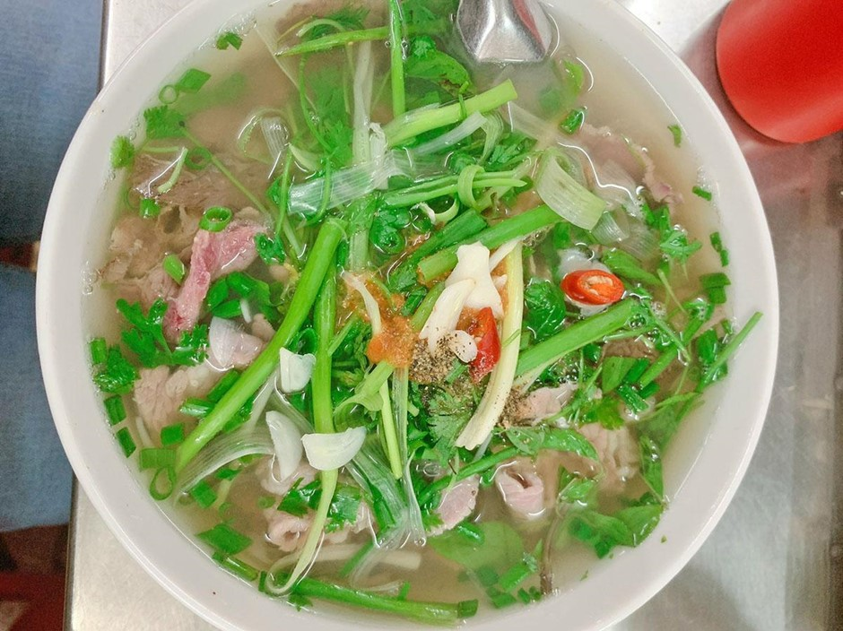
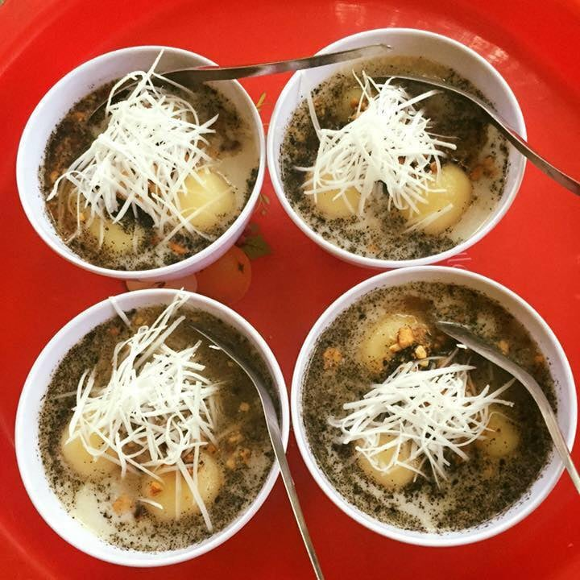

TIN TỨC SỰ KIỆN
Time Out: Việt Nam vào tốp điểm du lịch mùa đông lý tưởng nhất thế giới
Cập nhật: 26/11/2025 10:43:43
Số lần đọc: 171
(TITC) - Mới đây, tạp chí du lịch Time Out (Anh) công bố Việt Nam nằm trong danh sách 20 điểm đến mùa đông lý tưởng nhất thế giới cho năm 2025-2026.
Việt Nam - điểm đến ẩm thực hấp dẫn
Trong danh sách của Time Out, Việt Nam được xếp vào hạng “Best for food” - điểm đến mùa đông lý tưởng cho du khách yêu ẩm thực. Tạp chí nhấn mạnh: Việt Nam không chỉ đa dạng với những món ăn truyền thống, mà còn cực kỳ dễ tiếp cận, từ quán vỉa hè đến nhà hàng cao cấp, với chi phí hợp lý.
Time Out mô tả Việt Nam như một điểm đến sở hữu nền ẩm thực phong phú, đậm bản sắc, có thể làm hài lòng bất cứ du khách nào ghé thăm. Du khách “có thể ăn ngon ở mọi nơi”, từ những quán vỉa hè đến nhà hàng lớn, với giá cả dễ tiếp cận và hương vị khó quên.

Phở - món ăn nổi tiếng của Việt Nam
Ở Việt Nam, mùa đông được cảm nhận rõ rệt nhất ở khu vực miền Bắc. Trong tiết trời 12-15 độ C, một bát phở nghi ngút hương quế hồi luôn được xem là món ăn hoàn hảo. Không phải ngẫu nhiên mà CNN nhiều lần gọi phở Việt Nam là “món súp ngon nhất thế giới”, còn Lonely Planet thì xếp phở Hà Nội vào danh sách “50 món ăn phải thử một lần trong đời”. .
Bên cạnh phở, các món bún nước truyền thống như bún thang, bún mọc, bún bò, bún cá cũng là lựa chọn được nhiều du khách quốc tế yêu thích khi khám phá Hà Nội mùa lạnh. South China Morning Post từng mô tả bún thang như “bản giao hưởng tinh tế của ẩm thực Việt”, với từng sợi bún, lớp trứng thái chỉ, gà xé, nấm hương hòa quyện trong nước dùng thanh ngọt.

Không chỉ các món mặn, mùa đông Hà Nội còn gắn liền với những món chè nóng như chè sắn, chè bà cốt hay bánh trôi tàu. CNN từng đưa bánh trôi tàu vào danh sách “những món tráng miệng mùa đông độc đáo của châu Á”, nhấn mạnh sự hòa quyện giữa vị nóng của gừng và độ mềm dẻo của bột nếp như một “cái ôm nhỏ” trong những ngày lạnh giá.
Những trải nghiệm nên thử ở Việt Nam vào mùa đông
Time Out đánh giá giai đoạn từ tháng 10 đến tháng 2 năm sau là thời điểm lý tưởng để du lịch Việt Nam. Chi phí di chuyển và lưu trú tại Việt Nam cũng được Time Out nhắc đến là “thân thiện” với du khách, giúp tiết kiệm hơn so nhiều điểm du lịch quốc tế khác.
.jpg)
Ánh nắng ấm trong sáng mùa đông Hà Nội
Theo Time Out, di chuyển dọc đất nước để khám phá những địa điểm nổi bật như Hà Nội, Hội An, TP. Hồ Chí Minh là trải nghiệm không thể bỏ qua khi đến Việt Nam. Ở Hà Nội, du khách được khuyên nên ghé các quán jazz nhỏ, thưởng thức không khí phố cổ và ẩm thực đường phố. Hội An được nhắc đến với món Cao Lầu đặc trưng, những con phố cổ yên bình và sự quyến rũ của đèn lồng vào buổi tối. Ở TP. Hồ Chí Minh, Time Out gợi ý trải nghiệm các nhà hàng, quán cà phê và nhịp sống sôi động về đêm.
Danh sách của Time Out gồm 20 điểm đến đại diện cho nhiều phong cách du lịch khác nhau trên khắp thế giới. Trong đó, nhiều cái tên gây ấn tượng như Cape Town (Nam Phi) - thành phố nghỉ dưỡng tốt nhất; Tenerife (Tây Ban Nha) - thành phố ấm áp nhất châu Âu; Namibia - điểm đến hoang dã ấn tượng nhất; Cartagena (Colombia) - điểm đến nghệ thuật độc đáo nhất...
Nguồn: vietnamtourism.gov.vn - Đăng ngày 26/11/2025
CÙNG CHUYÊN MỤC